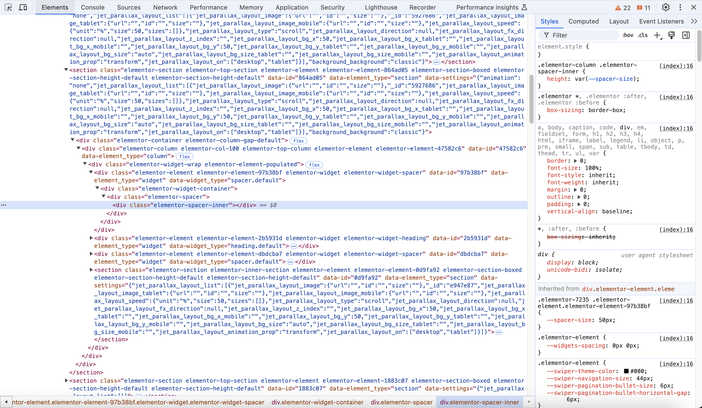
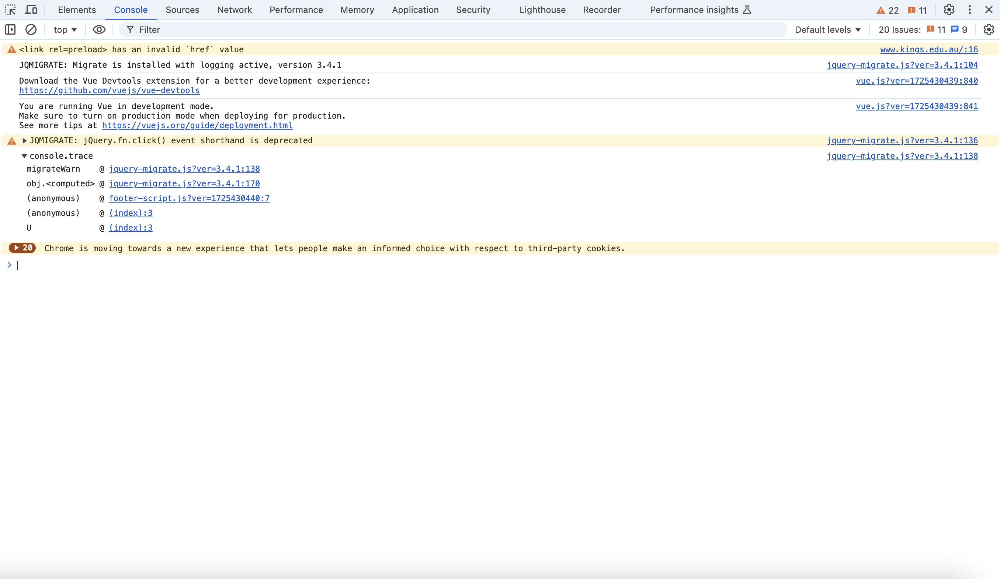
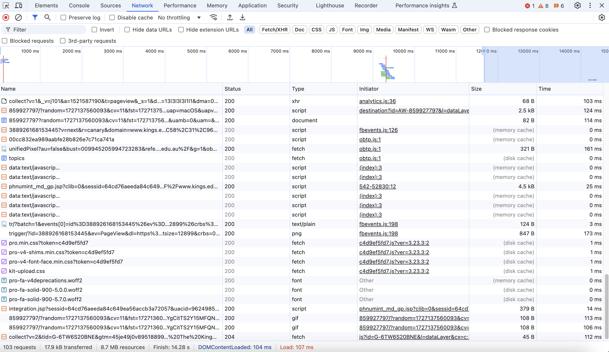
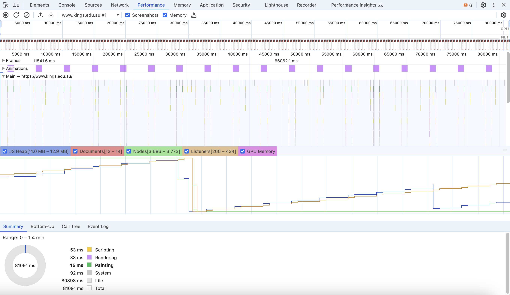
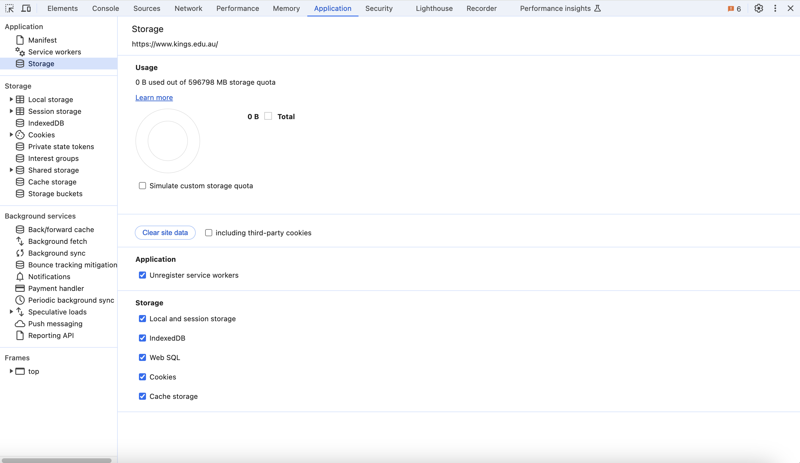
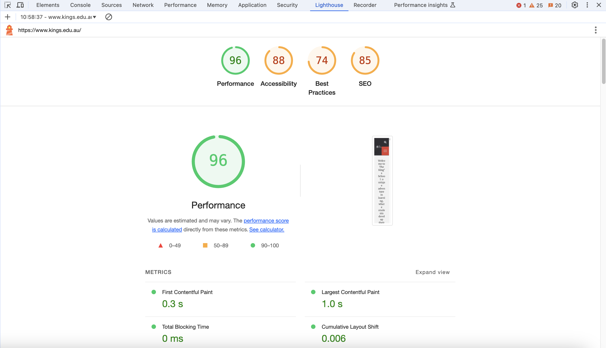

Content
A web browser is a software application that retrieves, presents, and navigates web pages. Browsers like Chrome, Firefox, Safari, and Edge each have unique features and engines that influence how web content is rendered. Understanding these differences is essential for developing and maintaining cross-browser compatible websites.
Browser Rendering Engines
Each browser has a unique rendering engine responsible for interpreting HTML, CSS, and JavaScript code and displaying it as a web page:
• Google Chrome: Uses the Blink engine.
• Mozilla Firefox: Uses the Gecko engine.
• Safari: Uses the WebKit engine.
• Microsoft Edge: Uses the Blink engine (previously used EdgeHTML).
These engines may interpret the same code slightly differently, which can lead to inconsistencies in how web pages appear and function across different browsers.
Developer Tools
Developer tools are built-in browser tools that help developers test, debug, and optimise their code directly within the browser. Key features include:
Elements Panel
- Displays the DOM structure of the current webpage.
- Allows developers to inspect and modify HTML and CSS in real-time.
- Useful for identifying and fixing layout and styling issues, testing different CSS properties, and editing content on-the-fly.

Console Panel
- An interactive shell to run JavaScript code directly within the browser.
- Useful for debugging JavaScript errors, executing scripts for testing purposes, and logging outputs.

Network Panel
- Tracks all network requests made by the browser.
- Useful for monitoring performance and size of assets, identifying slow or failed requests, and debugging AJAX requests.

Performance Panel
- Provides insights into the runtime performance of a website.
- Useful for profiling execution time of JavaScript code, analysing render and layout events, and capturing screenshots for performance issues.

Application Panel
- Tools to inspect and manage resources such as local storage, cookies, and service workers.
- Useful for managing client-side data, testing Progressive Web Apps (PWAs), and inspecting cache storage.

Cross-Browser Compatibility
Ensuring that a website works consistently across all major browsers is a critical aspect of web development. Browser compatibility issues arise when web standards are interpreted differently by each browser’s rendering engine.
CSS Layout Differences
1. Flexbox and Grid Layouts:
- Flexbox: While most modern browsers support Flexbox, there are differences in how they handle certain properties. For example:
flex-basis and min-width: In some browsers, flex-basis behaves differently depending on the presence of min-width or max-width properties.- Alignment Issues: The alignment properties (
align-items, justify-content, etc.) may produce slightly different visual results across browsers, especially when combined with nested flex containers.
- Grid Layout: Similar to Flexbox, Grid is widely supported, but certain features like
subgrid (supported in Firefox but not Chrome or Safari) or automatic minimum sizing for grid items can behave inconsistently.
- Implicit Grid Tracks: Browsers can differ in how they handle the creation of implicit grid tracks, especially when using auto-placement properties.
- Gap Property: Earlier versions of Edge do not support the gap property for Flexbox (only for Grid), causing spacing inconsistencies.
2. Vendor Prefixes and Legacy Support:
- Older browsers may require vendor prefixes like
-webkit-, -moz-, and -ms- to support certain CSS properties. This can lead to unexpected layouts if these prefixes are not included.
- For example, properties like transform, animation, and grid may require vendor prefixes in older versions of Safari, Firefox, and Internet Explorer.
3. Media Queries:
- Some browsers have different interpretations of media queries, especially for high-resolution displays or certain breakpoints. This can cause unexpected layout changes on different devices.
4. Browser-Specific Bugs:
- Browsers may have specific bugs or quirks that affect layout rendering. For example:
- Safari: Known for issues with flexbox where child elements may overflow their container, or negative margins cause unexpected behaviour.
- Chrome: Issues with stacking contexts and z-index when combined with flex or grid containers.
JavaScript API Support
1. ES6+ (ECMAScript 2015 and Beyond):
- Not all browsers support newer JavaScript features such as async/await, let and const declarations, or arrow functions. For example:
- Internet Explorer 11: Does not support ES6 features like Promise, Map, Set, or arrow functions.
- Polyfills: Libraries like Babel and core-js can be used to add support for these features in older browsers.
2. Web APIs:
- Newer APIs such as the Fetch API, Service Workers, and Intersection Observer are not universally supported across all browsers.
- Fetch API: Replaces XMLHttpRequest for network requests but is not supported in Internet Explorer.
- Service Workers: Provides the backbone for Progressive Web Apps (PWAs) by allowing offline caching and background sync. Not supported in all versions of Safari.
- Intersection Observer: Used for lazy-loading images and infinite scroll implementations. Limited support in older versions of Safari and Internet Explorer.
3. Polyfills and Shims:
- Polyfills are scripts that add support for features that are not natively available in certain browsers. They allow developers to use modern JavaScript features while maintaining compatibility with older browsers.
- Example: The core-js library provides polyfills for many ES6+ features.
- Shims modify or extend native methods to provide a consistent API. They are used when a browser partially supports a feature but implements it differently.
HTML Element Rendering
1. Default Styles and Behaviors:
- Different browsers apply default styles to HTML elements using their built-in user agent stylesheets. This can result in inconsistencies in how elements like
<button>, <input>, and <select> are rendered.
- Form Elements: Browsers often have different default styles for form controls. For example, the appearance of checkboxes, radio buttons, and file inputs can vary significantly between Chrome, Firefox, Safari, and Edge.
- Buttons: The default padding, border-radius, and font styles for
<button> elements can differ across browsers, leading to inconsistencies in appearance.
2. CSS Resets and Normalisation:
- To address these inconsistencies, developers use CSS resets (like Eric Meyer’s Reset) or normalisation libraries (like Normalize.css) that standardise default styles across all browsers.
- CSS Reset: Removes all default styles applied by browsers.
- Normalize.css: Preserves useful defaults while correcting browser-specific quirks.
3. Pseudo-Elements and Pseudo-Classes:
- Browsers may render pseudo-elements (
::before, ::after) and pseudo-classes (:hover, :focus) differently. For example:
- The visual behaviour of
:focus may differ across browsers, particularly with elements like links and form controls.
- The positioning and content of
::before and ::after pseudo-elements can sometimes render inconsistently when combined with complex layout models.
4. Accessibility and ARIA:
- Differences in how browsers interpret ARIA (Accessible Rich Internet Applications) attributes can affect the accessibility of custom components. For example:
- Custom-styled elements like sliders or accordions may have inconsistent keyboard navigation and screen reader support across browsers.
5. Rendering Performance:
- Different browsers may have varying performance characteristics when rendering complex elements or animations. For example:
- Hardware Acceleration: Browsers like Chrome and Firefox may use GPU acceleration for rendering, while others may not, affecting the performance of animations and transitions.
- Repaints and Reflows: The way browsers handle repaints and reflows (layout changes) can impact rendering performance, especially for complex or interactive UIs.
Performance Optimisation
Performance optimisation focuses on improving the speed, responsiveness, and overall user experience of a website. By minimising load times, reducing the size of resources, and ensuring efficient rendering of web pages, developers can enhance site performance and user satisfaction.
Tools like Google Lighthouse provide in-depth performance audits that help measure critical metrics such as page load time, Largest Contentful Paint (LCP), and Time to First Byte (TTFB). These metrics give developers insights into various aspects of website performance:
• Page Load Time measures the overall time it takes for a web page to be fully loaded and rendered, impacting user experience and search engine rankings.
• Largest Contentful Paint (LCP) indicates the time it takes for the largest visible content element (like an image or text block) to appear on the screen. This metric is crucial for assessing perceived loading speed, as it reflects how quickly users can see and interact with the main content.
• Time to First Byte (TTFB) measures the time between a user’s request for a resource and when the first byte is received by their browser. It is an indicator of server responsiveness and can be influenced by factors like server configuration, database queries, and content delivery networks (CDNs).

Google Lighthouse Report for King's Website
Security Features in Modern Browsers
Modern browsers include several security features designed to protect users and data:
- Same-Origin Policy: Restricts how scripts on different pages interact, preventing malicious websites from accessing sensitive data on other sites.
- Content Security Policy (CSP): Allows developers to define policies that restrict where content can be loaded from, mitigating risks like Cross-Site Scripting (XSS).
- HTTPS: Browsers enforce secure connections for websites, displaying warnings for non-secure HTTP pages.
PowerPoint
2.8 Web Browsers.pptx
▶
Video won't play offline. Watch on Canvas ·
all moduleshttps://kingsnsw.sharepoint.com/sites/ComputingStudies/_layouts/15/Doc.aspx?sourcedoc={cc17dd58-37ba-4edc-8b17-55c34651cd74}&action=embedview&wdAr=1.7770833333333333
![[online-only image]](https://kingsnet.kings.edu.au/images/UserUploadedImages/1754/banner2.jpg)